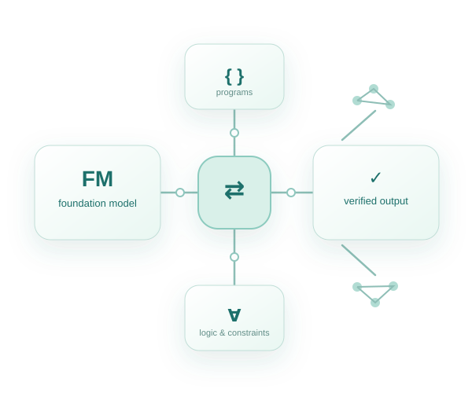
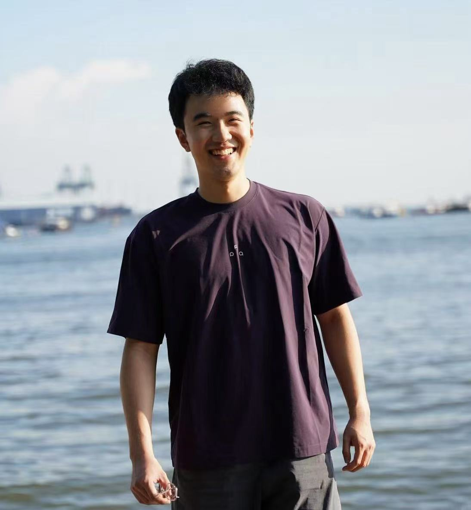
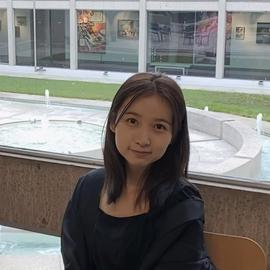
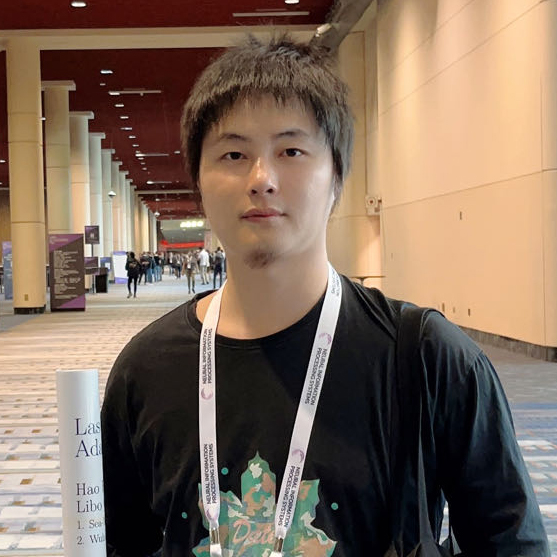
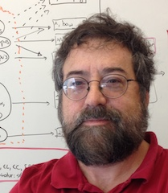

System architectures
Neural-simulated and tool-executed reasoning; verifier-guided workflows; compositional systems connecting execution, memory, and refinement.

Bridging large foundation models and symbolic representation for reliable, verifiable, and generalizable AI.
01 / MOTIVATION
The NeSy-FM Workshop @ AAAI 2027 (Neuro-Symbolic AI in Large Foundation Models) focuses on the integration of foundation models and symbolic AI. Despite their rapidly growing capabilities, foundation models can still produce outputs and reasoning processes that are difficult to verify, inconsistent with explicit constraints, and unreliable in complex or high-stakes settings. Symbolic methods offer explicit representations, structured reasoning, and formal mechanisms for constraining and verifying model behavior. Unlike earlier task-specific neuro-symbolic systems with largely fixed interfaces, foundation models can flexibly generate and interact with symbolic representations across diverse tasks, creating new opportunities for scalable neuro-symbolic integration. NeSy-FM brings together researchers exploring how these complementary strengths can be integrated to build foundation-model systems that are more reliable, verifiable, trustworthy, and generalizable.
02 / RESEARCH AREAS
We especially welcome work that uses symbolic structure throughout the foundation-model lifecycle.
Neural-simulated and tool-executed reasoning; verifier-guided workflows; compositional systems connecting execution, memory, and refinement.
Search over programs, proofs, plans, rules, equations, and structured hypotheses; program synthesis, theorem proving, and scientific discovery.
Persistent symbolic memories, knowledge graphs, causal models, plans, and structured world representations for long-horizon agents.
Symbolic rewards, formal feedback, verified traces, executable synthetic data, and constraint-guided learning.
Symbolic reasoning over language, vision, diagrams, scientific data, and embodied environments; planning, robotics, and tool use.
Verification, faithfulness, uncertainty, and constraint satisfaction in scientific discovery, cybersecurity, software engineering, robotics, and healthcare.
03 / PARTICIPATE
Share new ideas at the intersection of foundation models and symbolic AI.
We invite non-archival full and short papers, position papers, benchmarks, system descriptions, and work in progress. Submissions will be reviewed for relevance, novelty, soundness, and clarity. Each paper is planned to receive three reviews with senior meta-review oversight.
Accepted papers will be presented as posters, with selected papers invited for oral presentations. Workshop presentations must take place in person under AAAI-27 policy.
AAAI-27 workshop information04 / MARK YOUR CALENDAR
All deadlines are Anywhere on Earth (UTC−12), following the AAAI-27 workshop timetable.
Submit through the workshop OpenReview portal.
Decisions sent to submitting authors.
The final date and room will be assigned by AAAI.
05 / INVITED SPEAKERS
Speaker information will be posted here when confirmed.
06 / WORKSHOP SCHEDULE
The detailed schedule will be announced once the date and program are confirmed.
07 / THE TEAM
Researchers across neuro-symbolic reasoning, formal methods, multimodal learning, and industry AI.

PRIMARY CONTACTNational University of Singapore

ORGANIZERUniversity of California, Los Angeles
University of Oxford
Idiap Research Institute · University of Manchester

ORGANIZERUniversity of Oxford
IBM Research

ORGANIZERCarnegie Mellon University · Google DeepMind
GET IN TOUCH
Questions about the workshop or submissions? Contact the organizing team.